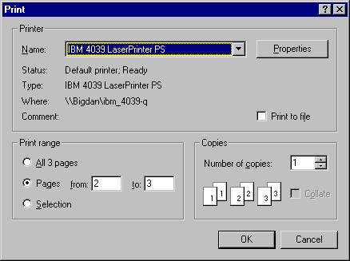

| Applies To: | Printer | RichEdit |
Description
This method is used to display a print set-up dialog box. The dialog box allows the user to select a particular printer, the pages to be printed and other information. The user's choices are returned in the result.

The argument to RTFPrintSetup is ⍬, or a 1 to 3-element array as follows:
| [1] | Print range | Optional - (see below) |
| [2] | Number of copies | Optional - Integer. |
| [3] | Collate | Optional - 0 or 1 |
Print range may be a simple character vector containing 'All', 'Pages', or 'Selection'.
Alternatively, it may be a 3 or 4-element nested vector containing:
| [1] | 'All', 'Pages', or 'Selection' |
| [2] | Start page (integer) |
| [3] | End page (integer) |
| [4] | Maximum pages |
Maximum pages (4th element of Print range) may be an integer number, or the name of a reference object. The latter allows the system to calculate the total number of pages required. If the object to which the RTFPrintSetup event is sent is a RichEdit, this is the name of a printer object. If the object to which the RTFPrintSetup event is sent is a Printer, this is the name of a RichEdit object. Both are required because the number of pages of a printed document is dependent upon both the content of the document and the characteristics of the device upon which it will be printed.
If the user presses OK, the result is a 4-element vector containing the user's choices as follows:
| [1] | Printer name | character vector |
| [2] | Print range | (see above) |
| [3] | Number of copies | Integer |
| [4] | Collate | 0 or 1 |
F.T.RTFPrintSetup ('All' 1 1 'PR')
IBM 4039 LaserPrinter PS Pages 2 3 3 1 0